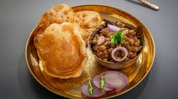

Chole Bhature

Descripton:
Chole bhature is a popular North Indian dish consisting of spicy chickpea curry (chole)
served with deep-fried bread (bhature).
To prepare the chole, start by soaking dried chickpeas overnight,
then boiling them until tender. In a separate pan, sauté onions, ginger, garlic,
and spices like cumin, coriander, and garam masala until fragrant. Add tomatoes,
cooked chickpeas, and water, then simmer until the flavors meld and the sauce thickens.
Garnish with fresh cilantro before serving.
For the bhature, combine all-purpose flour, yogurt, baking powder, salt,
and a touch of sugar to form a smooth dough.
Let it rest, then divide and roll out portions into circles.
Deep-fry the dough until golden and puffy, achieving a crispy exterior with a soft interior.
Serve the piping hot bhature alongside the aromatic chole for a delightful
culinary experience that combines bold flavors and contrasting textures.
Ingredients:
- Dried Chickpeas
- Onions
- Garlic
- Ginger
- Cummin seeds
- Coriander Powder
- Garam Masala
- Turmeric powder
- Red chilli powder
- Tomatoes
- Salt
- Cooking oil
- Water
- Flour
- Baking powder
- Yogurt
Steps:
- Soak dried chickpeas overnight, then boil until tender.
Sauté chopped onions, ginger, and garlic in oil until golden.
- Add cumin seeds, coriander powder, garam masala, turmeric, and red chili powder; cook until fragrant.
Add chopped tomatoes and cook until softened.
- Stir in boiled chickpeas, salt, and water; simmer until thickened.
Garnish with fresh cilantro.
- Mix all-purpose flour, yogurt, baking powder, salt, and a pinch of sugar; knead into a smooth dough.
Let the dough rest for 30 minutes.
- Divide dough into small portions and roll into circles.
Deep-fry in hot oil until puffed and golden brown.
- Serve hot chole with freshly fried bhature.
Enjoy with sliced onions, lemon wedges, or pickles.
Move to Main Menu